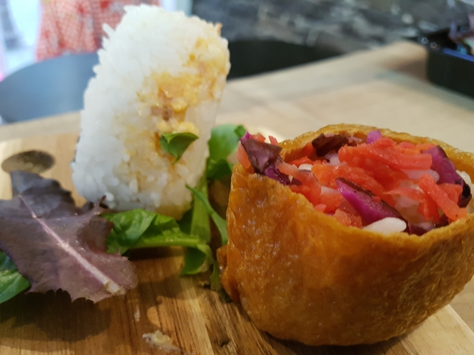
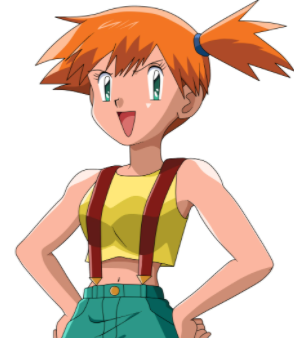

| DAYS | TIMES | OTHER INFO |
|---|---|---|
| MONDAY & SATURDAY | 11:30 to 18:00 | Operating hours have changed to abide lockdown laws of Quebec. |
| THURSDAY | 11:30 to 19:00 | CLOSED 24-26 DEC. |
| FRIDAY | 11:30 to 19:30 | CLOSED 31 DEC.-2 JAN. |
| SUNDAY | 11:30 to 17:00 |
CONTACT
For general enquiries, message us via Facebook, otherwise for specific requests see the table below:
| SERVICE | CONTACT |
|---|---|
| BOOKINGS/EVENTS | +1-418-614-5052 |
| K-POP | boutique@fanamanga.com |
| MANGA | manga@fanamanga.com |
SERVICES

CATERING
Are you a hungry group and would like to taste our products at home or in the office?
Our catering service for individuals and businesses will delight your taste buds and those of your guests.
A FRIENDLY SPACE
Fanamanga offers creative and cultural activities for lovers of Asian pop culture
Looking for a place for a birthday, card tournament or any other celebration?
CREATIVE WORKSHOPS
The charming Aura of KWY Atelier regularly presents in our premises amusing workshops of Japanese-flavoured creation.
There are regular events every week, but it also hosts private classes for individuals and groups, ideal for birthdays!
Follow her Facebook page to find out the dates and themes of our next workshops
OTHER ACTIVITIES
No matter your type of activity, Fanamanga makes its places available for your 5 to 7 or birthday parties.

HISTORY
Misty appears in Pokémon Red, Blue, Yellow, FireRed, and LeafGreen and Let's Go, Pikachu! and Let's Go, Eevee! as the Gym Leader of the Cerulean Gym, which is the second Gym that the player challenges on their journey.
Her strategy is an all-out attack with Water-type Pokémon, and she is constantly looking for ways to improve her technique. A swimmer herself, she trains at the Seafoam Islands.

 ©FANAMANGA
©FANAMANGA